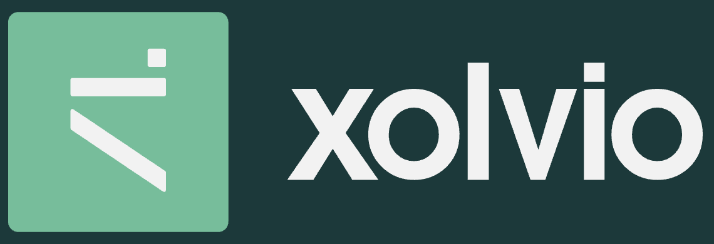
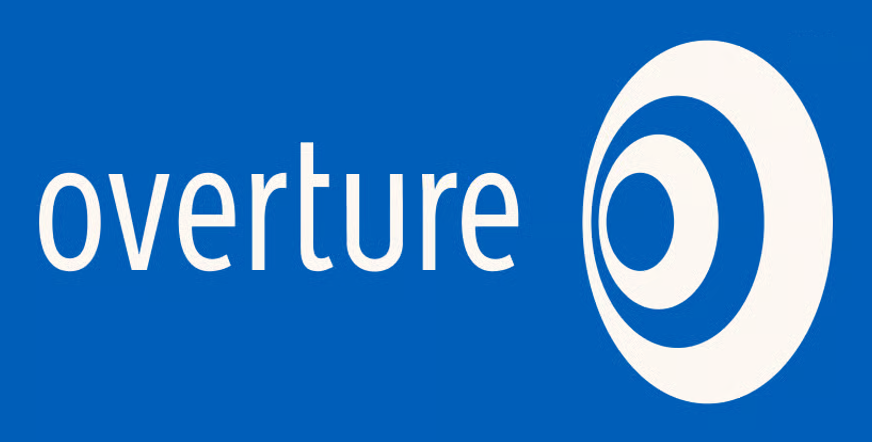

Mike Astle
Thirty years of getting the ones and zeroes in the right order.
I like to design the strategy and lead the teams behind great digital products. I've had success working at scales from startup to enterprise. I'm currently working to develop the strategy and practice of AI across org structures, product design, and software delivery.
Always happy to help entrepreneurs, especially those that are local to my home town of Charleston, SC, USA.
What am I looking for?
- ▸Full-time roles that require practical AI experience, seasoned software leadership, CTO-level strategy, or some combination of the three.
- ▸Development projects that require a small team of specialists. I build teams from my network and lead on delivery.
- ▸Fractional CTO opportunities including diligence, strategy, vendor or product selection, and oversight over vendor quality. Happy to add value on an hourly, daily, or retainer basis.
Current Projects
What I'm building, backing, and showing up for right now.
Consulting
NTS Consulting
Principal
Leading AI-driven consulting and development projects for a range of clients. Current projects include creating a standard for consumer-facing conversational interfaces for an international automotive OEM and building an AI-first electric vehicle (EV) challenger.
Medical Innovation
NeuroQuest
Chief Technology Officer
Building a HIPAA/CLIA-compliant platform integrating a novel analysis algorithm to establish Laboratory Information Management Systems (LIMS) to bring a new product to market that will make a real difference in customers' lives.

Community
CharlestonHacks
Board Member
Psyched to be working with a community-led organization that builds the tech ecosystem in Charleston through innovation-oriented events. Honored to MC a series of tech/creative Show & Tell events and weekend Hackathons.

Founding Team
Crush Yard
Special Tech Projects
I took the CTO role in the team that launched Crush Yard, a pickleball "eater-tainment" brand now active in Charleston, Orlando, and Nashville. I now contribute to new tech projects as Crush Yard continues to evolve.
Past Work
The experiences that brought me to where I am.
| Company | What I Learned |
|---|---|
|
 |
Boutique agency CTOs wear a lot of hats — sales, client management, hiring, and delivery. Event sourcing is a powerful technique that more teams should employ. Sales through partnership works — if you are willing to put in the work. Very senior teams need just as much leadership and coordination as junior teams. |
| Many short 1-on-1 chats before a meeting lead to smooth consensus in the meeting. Big companies can have truly warm leadership. Huge relationships build over time from the smallest of introductions. At 6K employees, organizational design becomes a full-time job. | |
| Thirteen years is not too long to stay at one company if you are growing together — I started as a Solution Architect in a company of 50 and ended up leading a department of almost 200 as CTO through to acquisition by CI&T. The work is only valuable if the client values it. Inclusion and direct connection make the human elements of near/off-shoring work. A hard part of being acquired is loss of certainty and authority. | |
| You really can build a great company with ten people in a London basement. The newest tool is very often not the right tool. There is something wrong with your codebase if an enthusiastic junior developer can not contribute to it within a day. Geocoding in particular (and geodata in general) is full of unexpected but wonderful complexity. | |
| There is little to no time to rest on your success in the world of internet-deployed products. The enemy of successful enterprise software rollout is customization. People don't have to meet in person to feel part of a team, but it really helps. | |
|
 |
There is a lot of physical, temporal, and cultural distance between London and Los Angeles. Variation in approach and business practice within Western Europe is not huge, but it is important to understand. Building a sophisticated service and operating that service robustly at global scale are two different problems. |
| Bubbles do not burst just because everyone knows you are in one. If you create a new kind of product, you can expand without competition or resistance. The nature of an organization changes when it becomes somebody's job to tell others what they can not do. |
Bits & Pieces
Hacks, talks, and such.
-
▸
Gothify
Vibe-coded Chrome Extension that I made as a funny opener for a Charleston Hacks Show & Tell event.
-
▸
G-Pop's Bait and Tackle
An online bait and tackle rental/delivery service I created with my brother in summer 2025.
-
▸
What?
A short film made entirely with the OpenArt.ai platform. Winner of the Audience Award at the 2025 CharlestonHacks 30 Second AI Film Fest.
-
▸
GraphQLConf 2025
I gave a talk in Amsterdam about the productive intersection of Event Sourcing and GraphQL.
-
▸
Apollo Summit 2024
Supergraphs and Narrative Driven Development in NYC.
-
▸
SXSW 2023
I hosted a panel entitled "The Power to Move You: Real State of EV Adoption" featuring friends from Audi, GM, and Hubject.
Places I've Lived
A few of the cities I've called home.
Charleston, SC, USA
When people ask me where I'm from, this is what I say. Lived here through my first two years of high school. Been living here again for about the last 14 years with my wife and two daughters.
Los Angeles, CA, USA
I went to college in LA (Pasadena) and lived here for two disconnected years after school. LA gets a bad name, I think. It makes a lot of sense when you live there.
London, UK
I spent most of my 20s living and working in London, always living in the East End. A lot of British expressions have worked their way into my speech.
Vienna, AT
My wife is Austrian and my kids are Austro-American. We lived in Vienna for about a year and a half. I speak the kind of German that you need to get around town — can tell a joke or two but could not work in it.
School Days
Where I picked up some early lessons.
Caltech
So many things to learn, so many different kinds of people to meet. I became the president of Ricketts House — a bit like Slytherin. Research in the Multi-Res modeling group.
GSSM
SC GSSM is a two-year public residential high school for giant super nerds. I loved it and I actively support their mission through donations and alumni participation.